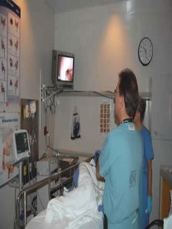
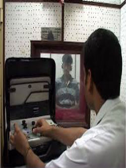
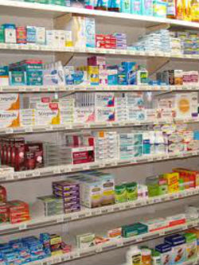
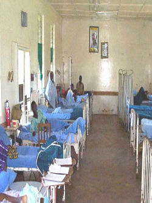
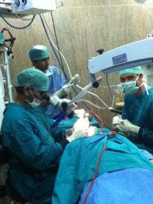
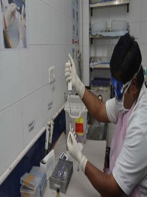

Menu
HOME
ABOUT US
OPD
Our OPDs
Sri Karanpur
Padampur
Raisinghnagar
Gajsingh pur
Anoopgarh
Gharsana
Abohar
Malout
FACILITIES
Endoscopy
Audiometer Testing
Medical Store
Patient Ward
Operation Theatre
Laboratory
CONTACT US
Facilities Providing by Dayama Hospital
Endoscopy

Ear Diseases
एंडोस्कोपी द्वारा कान के अन्दर की सभी तरह की वीडीयो जाँच
Nose Diseases
एंडोस्कोपी द्वारा नाक के अन्दर की सभी तरह की बढे माँस की वीडीयो जाँच
Throat Diseases
एंडोस्कोपी द्वारा गले के अन्दर की सभी तरह की वीडीयो जाँच
Audiometer Testing

Ear Diseases
सुनने की जाँच (Pure Tone Audiogram) एंव कान की मशीन (Digital Hearing Aid)
कम्पयुटर द्वारा सुनने की जाँच
Medical Store

Ear Diseases
यहां पर सभी तरह की कान की दवाईयां व आॅपरेशन सामग्री उचित दाम पर मिलती हैं ।
Nose Diseases
यहां पर सभी तरह की नाक की दवाईयां व आॅपरेशन सामग्री उचित दाम पर मिलती हैं ।
Throat Diseases
यहां पर सभी तरह की गले की दवाईयां व आॅपरेशन सामग्री उचित दाम पर मिलती हैं ।
Patient Ward

Rest House
पुर्णतया आरामदायक आैर रोगी के िलए सुविधाजनक बिस्तर
शहर के शोर से मुक्त
तुरन्त निगरानी के लिए 24 कैमरे की सुविधा
Operation Theatre

Ear Diseases
कान, नाक व गले में फंसी वस्तुऔं को दुरबीन से िनकालना (Endoscopic Foreign Body Removal)
कान के पर्दे का अत्याधुनिक तकनीक (Microscope) से प्रत्यारोपण (Tympanopalsty)
Nose Diseases
दुरबीन द्वारा नाक के साइनस का आॅपरेशन (FESS)
नाक की हड्डी के टेढेपन(DNS) का दुरबीन द्वारा आॅपरेशन (Endoscopic Septopalasty)
दुरबीन द्वारा नाक में बढे माँस (Polyposis) का आॅपरेशन (FESS)
Throat Diseases
दुरबीन द्वारा गले की सभी तरह की कैंसर का परामर्श, जाँच (Biopsy) एंव आॅपरेशन
जन्म से कटे होंठ का आॅपरेशन (Cleft Palate & Cleft Lip)
चेहरे की हड्डी का फ्रेक्चर (Facio Maxillary Fracturesy)
गले की गांठ (थायराड) का अत्याधुनिक तकनीक से सफल आॅपरेशन
गले में एलर्जी, गले में टाँिसल, एडिनोइडस का आॅपरेशन (Tonsillectomy & Adenoidectomy)
आवाज के भारीपन की दुरबीन द्वारा आॅपरेशन (MLS)
Laboratory

Ear Diseases
कान में मवाद आना (Ear Discharge)
कान, नाक व गले में फंसी वस्तुऔं को दुरबीन से िनकालना (Endoscopic Foreign Body Removal)
Nose Diseases
नाक में बार-बार पानी आना (Sinusitis) नाक की एलर्जी (Allergic) की दुरबीन द्वारा जाँच (DNE)
दुरबीन द्वारा नाक के साइनस का आॅपरेशन (FESS)
दुरबीन द्वारा नाक में बढे माँस (Polyposis) का आॅपरेशन (FESS)
Throat Diseases
दुरबीन द्वारा गले की सभी तरह की कैंसर का परामर्श, जाँच (Biopsy)
गले की गांठ (थायराड) का अत्याधुनिक तकनीक से जाँच
गले में एलर्जी, गले में टाँिसल, एडिनोइडस की जाँच
आवाज के भारीपन की दुरबीन द्वारा जाँच (MLS)
HOME
ABOUT US
OPD
FACILITIES
CONTACT US
© All Rights Reserved | Design by
Jugal Dhamu